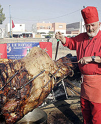

Asado
 De: La Frikipedia, la enciclopedia extremadamente seria.
De: La Frikipedia, la enciclopedia extremadamente seria.
| De la serie alimentos y otras vainas:
|
|
|
| Nombre:
|
Asado
|
| Tipo de Comida:
|
Cadáver
|
| ¿Como se Come?
|
Con la boca
|
| ¿De donde Proviene?
|
Argentina
|
| Ingrediente Basico:
|
vaca
|
| Forma de Presentación
|
con las manos
|
| Sabor:
|
carne
|
El asado es una comida universal que los argentinos a vísperas del fin del mundo descubrieron y creyeron que habían inventado. Verdaderamente no lo creyeron, pero viendo que el final de los tiempos estaba cerca y que jamás inventaron nada y que por no tener no tenían ni plato típico, decidieron echarle la típica jeta argentina de Barbate y denominarlo asado típico argentino. Se prepara desde el año 5890 a.C. por los wombats y ha sido copiado por la mayoría de los países del mundo, incluyendo Argentina que fue el último en hacerlo en el siglo XIX:
Bueno, tal vez no eran varios.
El hecho de que el asado mas grande del mundo sea argentino ha generado una gran cantidad de traumas en muchos uruguayos, lo cual los ha llevado al grado de escribir pelotudeces mentiras por internet, la cual es su mayor fuente de autoconvencimiento. De esta manera logran minimizar su patología la cual se basa en el constante odio a sus hermanos argentinos uruguayos y evitar asi recurrir a tantas drogas medicamentos ilegales.
Formas de preparar un asado
Para preparar un asado es indispensable tener carne, que puede ser de vaca, de humano, de cerdo o de cualquier pobre animal que justo pase por ahi y sea alcanzado por el calibre 22 del asador.
Una vez obtenida la carne se debe colocar sobre una parrila (por lo general debe estar llena de grasa o mugre de un Asado anterior que según el asador "le da buen sabor") y esta a su vez se coloca sobre brasas ardiendo a 124ºC que hacen que se cocine la carne.
Durante este proceso se debe intentar liberar la mayor cantidad de humo posible para que toda la gente alrededor, ya sean vecinos o gente que pasa por el lugar, sepa que tú estas haciendo un asado y ellos no estan invitados
Formas de NO preparar un asado
- Tirarle alcohol al asado y luego un fósforo
- Envolverlo en papel y prenderle fuego
- Ponerlo arriba de 3.000.000 luces led hasta que arda en llamas
- Tirándole perfume Hugo Boss y prendiéndola fuego
- Clavarle pedazos de madera dentro y prendiéndolos fuego
- Poniéndole una bomba molotov dentro (ya si has hecho todo esto eres un pirómano)
- Poniéndole una lupa gigante encima a pleno día
- Frotándolo con tus manos hasta que no distingas tus manos del asado
- Pegándole con un martillo para que se ablande
- Tirándolo al suelo, ponerle una bomba, luego tirarle encima una palomita, por lo que la palomita lo hará explotar en 6 pedazos.
Respuestas de un buen asador
Todo buen asador debe saber responder a las preguntas que los invitados le formulen durante la asación (o como se le diga al proceso en el que se hace un asado).
- Si le preguntan: ¿Falta mucho, che?
- Usted responde: Ya falta poquito, ¿por qué no vas preparando la mesa?
- De esa manera la persona que preguntó se da cuenta de que ahora lleva la responsabilidad de poner la mesa y simplemente se marcha dejándolo a usted, el asador, en paz.
- Si le preguntan: ¿De dónde es la carne?
- Usted responde: Del lugar ese que te conté la otra vez en lo de Mario, ¿te acordás?
- Con esa respuesta usted le plantea una situación de compromiso al preguntador ya que no puede no acordarse de lo que su amigo le contó en lo de Mario.

La nueva actualización de
Los Sims Más Gronchos que Nunca- Si le preguntan: ¿No te parece que le pusiste mucha sal? (sin haber probado el asado)
- Usted responde: Hasta que no lo pruebe no voy a saber
- Con esa respuesta usted pospone su problema hacia otro momento espacio-tiempo en donde ya habrá preparado una respuesta sensata que lo sacará fácilmente del problema antes planteado.
- Si le preguntan: ¿Alcanza para todos?
- Usted responde: ¿¡Y qué se yo!?
- Dicho esto, no sólo el autoestima del adversario disminuye en un 50%, sino que el suyo también aumenta proporcionalmente al haber humillado al rival.
- Si le preguntan: ¿Está bueno? Mirá que el otro que hiciste estaba incomible...
- Usted responde: ...
- Ahí si, definitivamente lo cagaron.
 Hay que tener
huevos para hacer este asado
Complementos
A la carne del asado se la puede acompañar con los siguientes complementos y algunos más:
- Chorizos (véase choripán)
- Morcillas
- Salchichas parrilleras y en su defecto salchichas
- Dedos humanos
- Pelo humano
- Pan
- Hongos alucinógenos
- Salsa de sangre
- Jugo Tang
- Leche Cindor
- Camarón en su salsa
- Conejo del campo
- Conejo de la pradera
- Conejo en su salsa
- Conejo en fricazé
- Conejo en conejo
- Conejo arrollado por un auto
- Conejo arrollado por un barco
- Conejo del Kilimanyaro
- Conejo austro-húngaro-germano-polaco-chungoslavo
- Conejo hillbilly
- Conejo Joe Montana
- Conejo disecado
- Conejo araña
- Conejo sombrero
- Conejo Hurlingam
- Conejo a la plancha
- Conejo al tarro de basura
- Conejo feliz
- Conejo triste
- Conejo vivo
- Conejo muerto
- Conejo malo
- Conejo bueno
- Conejo conejo
- Conejo-dido
¿Cómo se cocina un asado?
El asado es la única comida que el hombre cocina. Cuando el hombre se propone hacerlo, la cadena de acontecimientos es más o menos la siguiente.
Según las mujeres
- La mujer va al supermercado a comprar todo lo que es necesario.
- La mujer prepara la ensalada, las papas con mayonesa y el postre.
- La mujer prepara la carne, la pone en una fuente con los utensilios necesarios; mientras que el hombre está sentado junto a la parrilla, tomándose un vino.
- El hombre pone la carne en la parrilla.
- La mujer vuelve adentro a poner la mesa y a preparar la ensalada.
- La mujer le dice al marido que la carne se está quemando.
- El hombre saca la carne de la parrilla.
- La mujer pone los platos en la mesa.
- Después de comer la mujer trae el postre, levanta la mesa y luego lava los platos.
- El hombre le pregunta a la mujer si está contenta de no haber tenido que cocinar ese día y, percibiendo la cara de orto de la mujer, concluye que no hay poronga que les venga bien.
Según los hombres
- Ningún hombre en su sano juicio va a mandar a su mujer a comprar las cosas para el asado: ella no va a traer cerveza ni vino y traerá alas de pollo y tres kilos de puchero que el carnicero le dijo que salía muy rico a la parrilla, ya que no consiguió enchufárselo a ninguna otra pelotuda.
- ¿Ensalada, papas con mayonesa y postre? Ella prepara estas huevadas para que coman las demás mujeres. Los hombres comemos carne y nada más.
- ¿Preparar la carne? A la carne sólo se le pone sal al momento de ponerla en la parrilla...
- ¿Bandeja con utensilios? Eso es para maricones, el hombre macho se las arregla con un palito quemado, un cuchillo y las manos.
- ¿Qué sólo se pone la carne en la parrilla?... ¿Y quién hizo el fuego, separó las brasas, las acomodó, dio vuelta la carne, disciplinó los chinchulines y pinchó los chorizos?
- ¿Otra vez preparar la ensalada? Ya dijimos que esas pelotudeces las comen las mujeres y los conejos.
- ¿Que la carne se está quemando? El hombre sólo deja pasar la carne porque la mujer se vive quejando que "está muy jugosa", que "esto está muy crudo", o que "la deje en la parrilla dos minutos más", después de que les ofrecimos el mismo pedazo diez veces, y una hora después de que estaba a punto. Es decir que ellas, acaban comiendo la carne en forma de carbón, tan tierna y suculenta, como una suela que lleva cinco años al sol del desierto del Sahara. Menos mal que somos los hombres los que sacamos la carne de la parrilla, si fuera por ellas viviríamos comiendo pedazos de carbón.
- ¿Platos? Sólo si son para ellas; el hombre come directamente de la tabla o en el pan.
- ¿Postre?... ¿Lavar los platos?... Yo usé los dedos, y me los limpié en el pantalón!!!
- Realmente, es al pedo, nunca van a entender lo que es un asado.
¿Sabías que...?
Esto le hacemos los asadores al
pollo - No es una comida apta para vegetarianos?
- Es el archienemigo del pollo al espiedo?
- Es el padre del choripán?
- Es el primo del mate?
- En otros países se lo llama barbacoa pero no es lo mismo?
- En verdad si es lo mismo, pero barbacoa en una salsa y los Argentinos suelen cambiarle el nombre a algo, empeorarlo y decir que es suyo? (Vease cumbia villera)
- Los Urugüayenses nos tienen envidia porque son una provincia de Argentina y nos copian todo lo que hacemos?
- El asado aporta 3 kilos de vitamina F5?
- Esa vitamina tarde o temprano te mata?
- Pero te salvás si apretas Alt+F4?
Autor(es):
- E-At
- Tetuckmorris
- Nick X
- Pancho x
- Nicoloco3625
- Harry El del Pote
- Diosinfinito
- Mekasn
- Jetray96
- Taak
Frikipedia 2005-2016, Licencia
GFDL 1.2 - Extraído por FrikiLeaks
 Alimentos
Alimentos